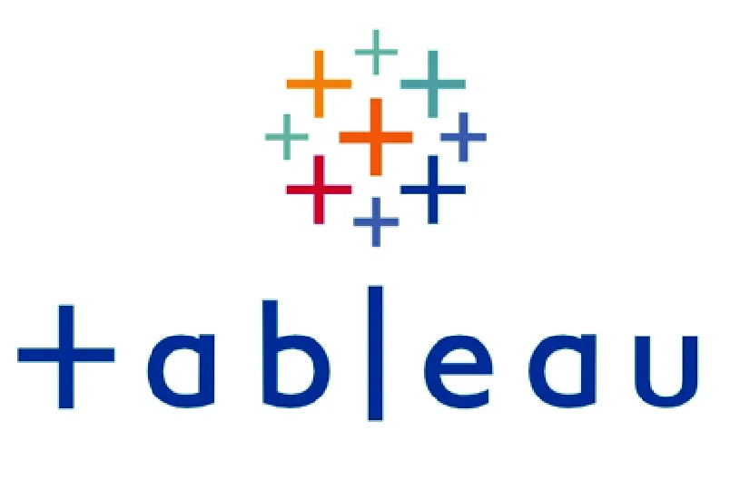
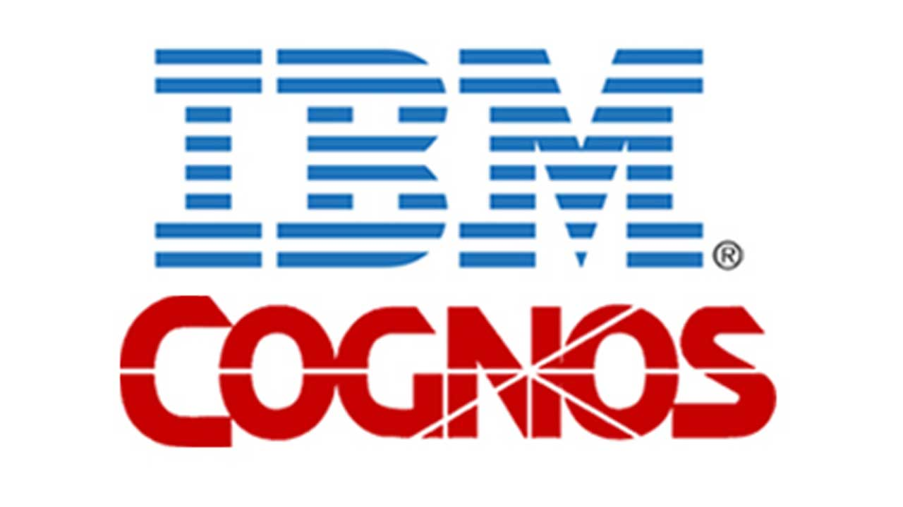

This application creates an interactive dashboard on Web using Python's dash and plotly.
This dashboard allows airlines to visualize data on US domestic airline flights performance reports
to improve their flight performance, and thereby customer loyalty.
In this project, SQL queries were used for analyzing three datasets about the communities in the city of Chicago to understand the socioeconomic conditions, crimes, and safety at public schools in those areas.

In this project, stock data and revenue data of two companies, Tesla Inc. and GameStop Corp. were extracted from websites using yfinance and web scraping techniques. The two stocks were compared graphically, and the conclusions were used to categorize them.
In this project, a dataset regarding house sales prices in King County, USA was analyzed using several modules in python libraries. Following exploratory data analysis, models were developed and refined to derive an optimal model for predicting house sales prices in the area.
In this project, a wide range of visualizations were created using various python libraries. A dataset focusing on immigrants to Canada, a San Francisco Crime dataset, and data generated within the code, as well as a dataset from a scientific study were used to make these visualizations.

In this project, a story about the demand and supply of electricity in the United States was created in Tableau. Before individual visualizations were assembled into the story, they were constructed to show the demand at different time scales and regions, the match between the supply and the demand, the amount of electricity generated by different sources, and the trend in moving toward renewable and flexible sources.

In this project, three dashboards based on Stack Overflow developer survey results were created using IBM Cognos Dashboard Embedded (CDE) through IBM Cloud. The first dashboard is about the technology usage by the participating developers in the year surveyed, the second one is regarding the technology trend in the following year, and the third one is concerning the demographics of the developers.

In this project, a python application consisting of four modules was developed for auditors from the insurance company of a flight training school to audit flight records of the school to ensure that the school complied with the insurance requirements. The application retrieved data from five datasets in either csv or json format. The application was tested and three years of flight records were audited.

In this project, data mining was performed on a dataset regarding stroke using RapidMiner to understand factors/attributes that influence the chance of having a stroke. A thorough data wrangling process was carried out to prepare the data for model development. Five types of models were developed and their performances were compared.
In this project, a secure network architecture based on segmentation and compartmentalization was designed to safeguard the information passing through the network of enterprises. This architecture offers multi-layered controls of traffic flowing through their network. It is particularly helpful for enterprises demanding high level of data security.
This project is associated with the Data Security project. In this project, the tasks to be completed for the first two of the six phases of implementing the secure network proposed in the Data Security project were defined and managed using Microsoft Project. The risks that this project could face as well as the comparison between traditional and Agile project management are also discussed.

In this project, various types of visualization and a dashboard were created in Excel using a dataset about cars of Japanese, German, and American manufacturers. Models of these car makers were compared by price, unit sales, performance, retention rate, and resale value, etc.